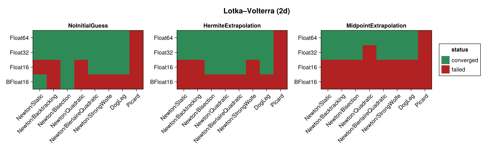
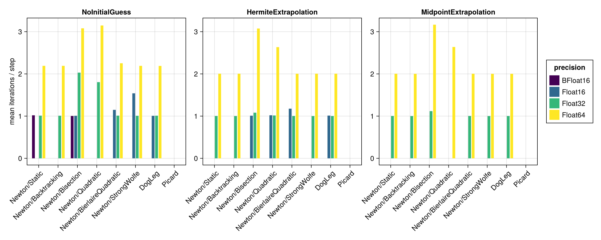
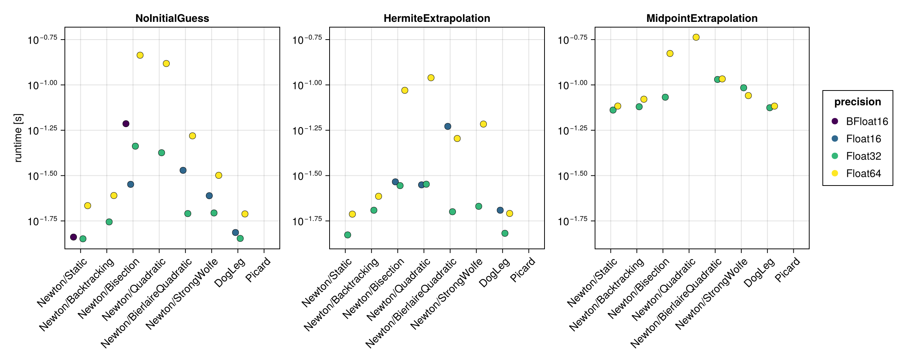
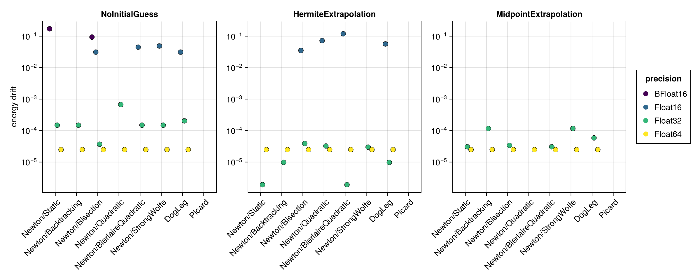
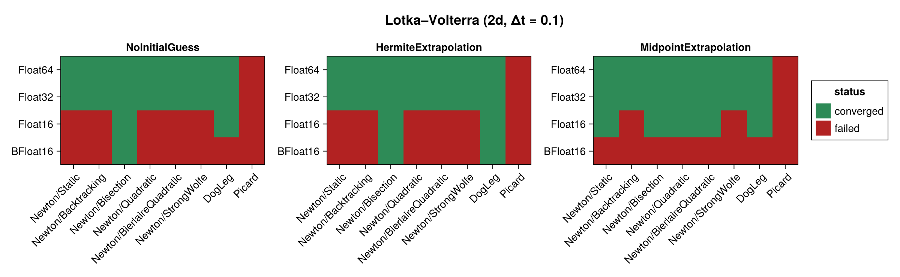
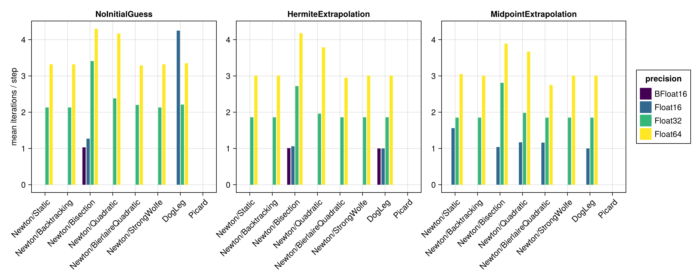
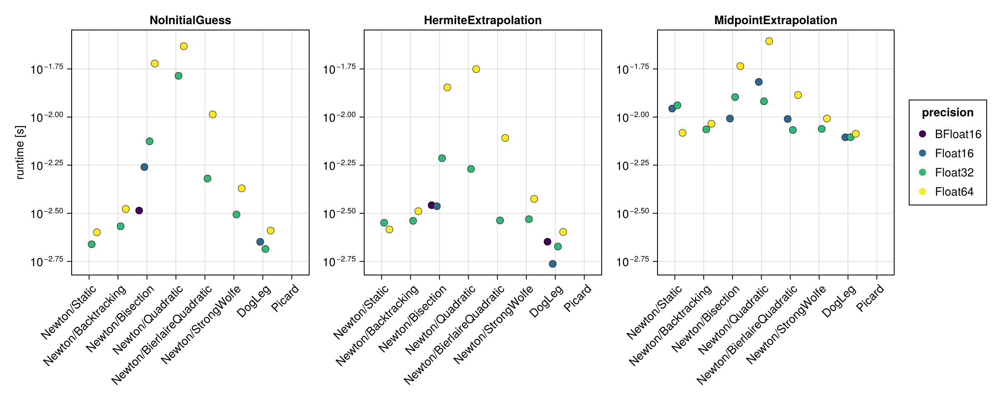
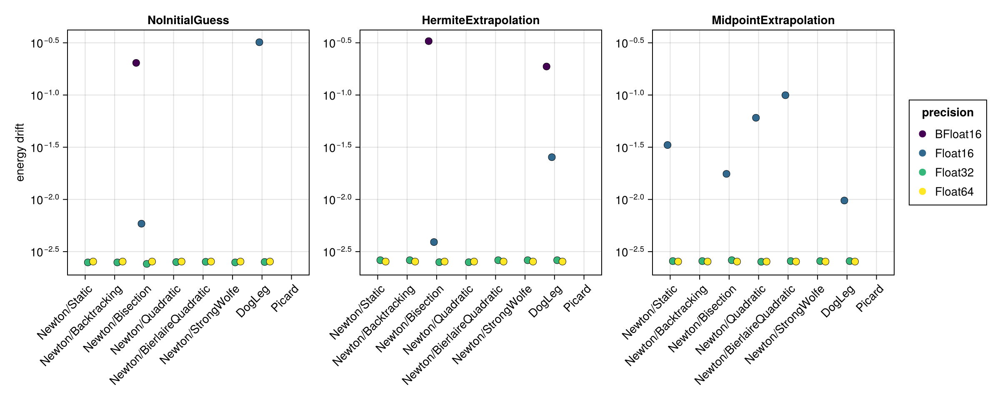

Lotka–Volterra (2d)
The 2d Lotka–Volterra system is a non-canonical Hamiltonian system, benchmarked here in its implicit form via iodeproblem (an implicit ODE / degenerate Lagrangian). Its Hamiltonian $H = a_1 q_1 + a_2 q_2 + b_1 \log q_1 + b_2 \log q_2$ depends on the positions $q$ alone and is used for the energy-drift metric. The system is stiffer than the oscillator and pendulum, so the native time span $(0, 10)$ with $\Delta t = 0.01$ is used; the results are then repeated for a ten times coarser step $\Delta t = 0.1$ (see Coarse time step (Δt = 0.1)).
The benchmark below is regenerated at documentation build time with a single, fast timing pass. See the driver script scripts/midpoint_lotka_volterra_2d.jl for accurate BenchmarkTools measurements.
using SolverBenchmark
spec = lotka_volterra_2d_spec()
df = cached_sweep("lotka_volterra_2d_dt0.01") do
run_benchmark(spec; timing = :quick, verbose = false, quiet = true)
endConvergence
plot_convergence(df; title = "Lotka–Volterra (2d)")
Nonlinear iterations
Mean number of nonlinear-solver iterations per time step (converged runs only):
plot_iterations(df)
Run time
plot_runtime(df)
Energy drift
Drift of the conserved Hamiltonian:
plot_energy_drift(df)
Discussion
- Being an implicit, non-canonical system, the implicit midpoint equations are genuinely nonlinear:
Newton(with a robust line search) andDogLegconverge in about 2 iterations per step atFloat32/Float64. Picardnever converges on this system — unlike the harmonic oscillator and pendulum (where it converged, if slowly), the fixed-point iteration diverges on the non-canonicaliodeproblemformulation. It is the only solver that fails atFloat32/Float64: every other configuration converges at both precisions.Float16largely fails (9/24 here, 13/24 at the coarse step): the Newton linear solve hits singular Jacobians and the trajectory diverges.Float32(19/24) andFloat64(21/24) behave essentially identically — the achievable step accuracy is already reached atFloat32.BFloat16does worse thanFloat16, not better — 1/24 here and 7/24 at the coarse step, against 9/24 and 13/24. This is the comparison the two 16-bit formats were added for, and it identifies the cause: the failures come from near-singular Jacobians, which need significand bits, andBFloat16trades three of them away for exponent range this problem never needs. (At $\Delta t = 0.01$ theBFloat16figure is further depressed by the time-grid collision described under Harmonic Oscillator; the coarse step is the honest comparison.)- As always the initial guess matters only for the solvers that iterate more; for the one- to two-iteration Newton/DogLeg runs it has little effect.
Results table
markdown_table(summary_table(df))| precision | solver_label | initial_guess | converged | iterations_mean | runtime_s | max_residual | at_tolerance | energy_drift |
|---|---|---|---|---|---|---|---|---|
| BFloat16 | Newton/Static | NoInitialGuess | ✓ | 1.02 | 0.0145 | 0.0625 | ✓ | 0.172 |
| BFloat16 | Newton/Static | HermiteExtrapolation | ✗ | — | — | — | ✗ | — |
| BFloat16 | Newton/Static | MidpointExtrapolation | ✗ | — | — | — | ✗ | — |
| BFloat16 | Newton/Backtracking | NoInitialGuess | ✗ | — | — | — | ✗ | — |
| BFloat16 | Newton/Backtracking | HermiteExtrapolation | ✗ | — | — | — | ✗ | — |
| BFloat16 | Newton/Backtracking | MidpointExtrapolation | ✗ | — | — | — | ✗ | — |
| BFloat16 | Newton/Bisection | NoInitialGuess | ✓ | 1 | 0.0611 | 0.062 | ✓ | 0.0938 |
| BFloat16 | Newton/Bisection | HermiteExtrapolation | ✗ | — | — | — | ✗ | — |
| BFloat16 | Newton/Bisection | MidpointExtrapolation | ✗ | — | — | — | ✗ | — |
| BFloat16 | Newton/Quadratic | NoInitialGuess | ✗ | — | — | — | ✗ | — |
| BFloat16 | Newton/Quadratic | HermiteExtrapolation | ✗ | — | — | — | ✗ | — |
| BFloat16 | Newton/Quadratic | MidpointExtrapolation | ✗ | — | — | — | ✗ | — |
| BFloat16 | Newton/BierlaireQuadratic | NoInitialGuess | ✗ | — | — | — | ✗ | — |
| BFloat16 | Newton/BierlaireQuadratic | HermiteExtrapolation | ✗ | — | — | — | ✗ | — |
| BFloat16 | Newton/BierlaireQuadratic | MidpointExtrapolation | ✗ | — | — | — | ✗ | — |
| BFloat16 | Newton/StrongWolfe | NoInitialGuess | ✗ | — | — | — | ✗ | — |
| BFloat16 | Newton/StrongWolfe | HermiteExtrapolation | ✗ | — | — | — | ✗ | — |
| BFloat16 | Newton/StrongWolfe | MidpointExtrapolation | ✗ | — | — | — | ✗ | — |
| BFloat16 | DogLeg | NoInitialGuess | ✗ | 2.15 | 0.0217 | 0.918 | ✗ | — |
| BFloat16 | DogLeg | HermiteExtrapolation | ✗ | — | — | — | ✗ | — |
| BFloat16 | DogLeg | MidpointExtrapolation | ✗ | — | — | — | ✗ | — |
| BFloat16 | Picard | NoInitialGuess | ✗ | — | — | — | ✗ | — |
| BFloat16 | Picard | HermiteExtrapolation | ✗ | — | — | — | ✗ | — |
| BFloat16 | Picard | MidpointExtrapolation | ✗ | — | — | — | ✗ | — |
| Float16 | Newton/Static | NoInitialGuess | ✗ | — | — | — | ✗ | — |
| Float16 | Newton/Static | HermiteExtrapolation | ✗ | — | — | — | ✗ | — |
| Float16 | Newton/Static | MidpointExtrapolation | ✗ | — | — | — | ✗ | — |
| Float16 | Newton/Backtracking | NoInitialGuess | ✗ | — | — | — | ✗ | — |
| Float16 | Newton/Backtracking | HermiteExtrapolation | ✗ | — | — | — | ✗ | — |
| Float16 | Newton/Backtracking | MidpointExtrapolation | ✗ | — | — | — | ✗ | — |
| Float16 | Newton/Bisection | NoInitialGuess | ✓ | 1.01 | 0.0283 | 0.00729 | ✓ | 0.0312 |
| Float16 | Newton/Bisection | HermiteExtrapolation | ✓ | 1.01 | 0.0292 | 0.00757 | ✓ | 0.0352 |
| Float16 | Newton/Bisection | MidpointExtrapolation | ✗ | — | — | — | ✗ | — |
| Float16 | Newton/Quadratic | NoInitialGuess | ✗ | 1.03 | 0.0295 | 0.0101 | ✗ | — |
| Float16 | Newton/Quadratic | HermiteExtrapolation | ✓ | 1.02 | 0.0281 | 0.00774 | ✓ | 0.0723 |
| Float16 | Newton/Quadratic | MidpointExtrapolation | ✗ | — | — | — | ✗ | — |
| Float16 | Newton/BierlaireQuadratic | NoInitialGuess | ✓ | 1.15 | 0.0338 | 0.00781 | ✓ | 0.0449 |
| Float16 | Newton/BierlaireQuadratic | HermiteExtrapolation | ✓ | 1.18 | 0.0591 | 0.00781 | ✓ | 0.119 |
| Float16 | Newton/BierlaireQuadratic | MidpointExtrapolation | ✗ | — | — | — | ✗ | — |
| Float16 | Newton/StrongWolfe | NoInitialGuess | ✓ | 1.54 | 0.0245 | 0.00781 | ✓ | 0.0488 |
| Float16 | Newton/StrongWolfe | HermiteExtrapolation | ✗ | — | — | — | ✗ | — |
| Float16 | Newton/StrongWolfe | MidpointExtrapolation | ✗ | — | — | — | ✗ | — |
| Float16 | DogLeg | NoInitialGuess | ✓ | 1.01 | 0.0154 | 0.00684 | ✓ | 0.0312 |
| Float16 | DogLeg | HermiteExtrapolation | ✓ | 1.01 | 0.0204 | 0.00762 | ✓ | 0.0566 |
| Float16 | DogLeg | MidpointExtrapolation | ✗ | — | — | — | ✗ | — |
| Float16 | Picard | NoInitialGuess | ✗ | 5.76 | 0.0313 | 0.323 | ✗ | — |
| Float16 | Picard | HermiteExtrapolation | ✗ | 3.71 | 0.0293 | 0.0873 | ✗ | — |
| Float16 | Picard | MidpointExtrapolation | ✗ | — | — | — | ✗ | — |
| Float32 | Newton/Static | NoInitialGuess | ✓ | 1.01 | 0.0142 | 9.44e-07 | ✓ | 0.000149 |
| Float32 | Newton/Static | HermiteExtrapolation | ✓ | 1 | 0.0149 | 9.39e-07 | ✓ | 1.91e-06 |
| Float32 | Newton/Static | MidpointExtrapolation | ✓ | 1 | 0.0727 | 9.18e-07 | ✓ | 3.05e-05 |
| Float32 | Newton/Backtracking | NoInitialGuess | ✓ | 1.01 | 0.0176 | 9.44e-07 | ✓ | 0.000149 |
| Float32 | Newton/Backtracking | HermiteExtrapolation | ✓ | 1 | 0.0204 | 9.35e-07 | ✓ | 9.78e-06 |
| Float32 | Newton/Backtracking | MidpointExtrapolation | ✓ | 1 | 0.0758 | 9.39e-07 | ✓ | 0.000116 |
| Float32 | Newton/Bisection | NoInitialGuess | ✓ | 2.03 | 0.0459 | 8.92e-07 | ✓ | 3.7e-05 |
| Float32 | Newton/Bisection | HermiteExtrapolation | ✓ | 1.08 | 0.0278 | 9.51e-07 | ✓ | 3.89e-05 |
| Float32 | Newton/Bisection | MidpointExtrapolation | ✓ | 1.12 | 0.0856 | 9.49e-07 | ✓ | 3.39e-05 |
| Float32 | Newton/Quadratic | NoInitialGuess | ✓ | 1.8 | 0.0423 | 9.52e-07 | ✓ | 0.000668 |
| Float32 | Newton/Quadratic | HermiteExtrapolation | ✓ | 1.01 | 0.0283 | 9.26e-07 | ✓ | 3.24e-05 |
| Float32 | Newton/Quadratic | MidpointExtrapolation | ✗ | 1.02 | 0.0862 | 1.21e-06 | ✗ | — |
| Float32 | Newton/BierlaireQuadratic | NoInitialGuess | ✓ | 1.01 | 0.0195 | 9.44e-07 | ✓ | 0.000149 |
| Float32 | Newton/BierlaireQuadratic | HermiteExtrapolation | ✓ | 1 | 0.02 | 9.39e-07 | ✓ | 1.91e-06 |
| Float32 | Newton/BierlaireQuadratic | MidpointExtrapolation | ✓ | 1 | 0.107 | 9.18e-07 | ✓ | 3.05e-05 |
| Float32 | Newton/StrongWolfe | NoInitialGuess | ✓ | 1.01 | 0.0197 | 9.44e-07 | ✓ | 0.000149 |
| Float32 | Newton/StrongWolfe | HermiteExtrapolation | ✓ | 1 | 0.0214 | 8.96e-07 | ✓ | 2.98e-05 |
| Float32 | Newton/StrongWolfe | MidpointExtrapolation | ✓ | 1 | 0.0964 | 9.39e-07 | ✓ | 0.000116 |
| Float32 | DogLeg | NoInitialGuess | ✓ | 1.01 | 0.0142 | 8.48e-07 | ✓ | 0.000203 |
| Float32 | DogLeg | HermiteExtrapolation | ✓ | 1 | 0.0152 | 9.35e-07 | ✓ | 9.78e-06 |
| Float32 | DogLeg | MidpointExtrapolation | ✓ | 1 | 0.0749 | 9.38e-07 | ✓ | 5.87e-05 |
| Float32 | Picard | NoInitialGuess | ✗ | 9.84 | 0.181 | 0.957 | ✗ | — |
| Float32 | Picard | HermiteExtrapolation | ✗ | 5.25 | 0.0497 | 0.000483 | ✗ | — |
| Float32 | Picard | MidpointExtrapolation | ✗ | 5.66 | 0.11 | 0.00052 | ✗ | — |
| Float64 | Newton/Static | NoInitialGuess | ✓ | 2.19 | 0.0216 | 1.78e-15 | ✓ | 2.48e-05 |
| Float64 | Newton/Static | HermiteExtrapolation | ✓ | 2 | 0.0194 | 1.69e-15 | ✓ | 2.48e-05 |
| Float64 | Newton/Static | MidpointExtrapolation | ✓ | 2 | 0.0765 | 1.73e-15 | ✓ | 2.48e-05 |
| Float64 | Newton/Backtracking | NoInitialGuess | ✓ | 2.19 | 0.0246 | 1.78e-15 | ✓ | 2.48e-05 |
| Float64 | Newton/Backtracking | HermiteExtrapolation | ✓ | 2 | 0.0243 | 1.69e-15 | ✓ | 2.48e-05 |
| Float64 | Newton/Backtracking | MidpointExtrapolation | ✓ | 2 | 0.0834 | 1.64e-15 | ✓ | 2.48e-05 |
| Float64 | Newton/Bisection | NoInitialGuess | ✓ | 3.08 | 0.146 | 1.75e-15 | ✓ | 2.48e-05 |
| Float64 | Newton/Bisection | HermiteExtrapolation | ✓ | 3.08 | 0.0934 | 1.56e-15 | ✓ | 2.48e-05 |
| Float64 | Newton/Bisection | MidpointExtrapolation | ✓ | 3.17 | 0.149 | 1.61e-15 | ✓ | 2.48e-05 |
| Float64 | Newton/Quadratic | NoInitialGuess | ✓ | 3.15 | 0.131 | 1.68e-15 | ✓ | 2.48e-05 |
| Float64 | Newton/Quadratic | HermiteExtrapolation | ✓ | 2.63 | 0.11 | 1.74e-15 | ✓ | 2.48e-05 |
| Float64 | Newton/Quadratic | MidpointExtrapolation | ✓ | 2.64 | 0.183 | 1.76e-15 | ✓ | 2.48e-05 |
| Float64 | Newton/BierlaireQuadratic | NoInitialGuess | ✓ | 2.25 | 0.0524 | 1.77e-15 | ✓ | 2.48e-05 |
| Float64 | Newton/BierlaireQuadratic | HermiteExtrapolation | ✓ | 2 | 0.0506 | 1.76e-15 | ✓ | 2.48e-05 |
| Float64 | Newton/BierlaireQuadratic | MidpointExtrapolation | ✓ | 2 | 0.108 | 1.69e-15 | ✓ | 2.48e-05 |
| Float64 | Newton/StrongWolfe | NoInitialGuess | ✓ | 2.19 | 0.0317 | 1.78e-15 | ✓ | 2.48e-05 |
| Float64 | Newton/StrongWolfe | HermiteExtrapolation | ✓ | 2 | 0.0608 | 1.69e-15 | ✓ | 2.48e-05 |
| Float64 | Newton/StrongWolfe | MidpointExtrapolation | ✓ | 2 | 0.0873 | 1.64e-15 | ✓ | 2.48e-05 |
| Float64 | DogLeg | NoInitialGuess | ✓ | 2.19 | 0.0194 | 1.73e-15 | ✓ | 2.48e-05 |
| Float64 | DogLeg | HermiteExtrapolation | ✓ | 2 | 0.0196 | 1.69e-15 | ✓ | 2.48e-05 |
| Float64 | DogLeg | MidpointExtrapolation | ✓ | 2 | 0.0764 | 1.64e-15 | ✓ | 2.48e-05 |
| Float64 | Picard | NoInitialGuess | ✗ | — | — | — | ✗ | — |
| Float64 | Picard | HermiteExtrapolation | ✗ | 12.7 | 0.183 | 0.000336 | ✗ | — |
| Float64 | Picard | MidpointExtrapolation | ✗ | 13.4 | 0.279 | 0.000291 | ✗ | — |
Coarse time step (Δt = 0.1)
The same benchmark over $(0, 10)$ with a ten times larger step. The problem becomes harder: the converging solvers need more iterations (≈ 3 per step instead of ≈ 2), while the same configurations continue to fail (Picard, and much of Float16).
spec1 = lotka_volterra_2d_spec(timespan = (0.0, 10.0), timestep = 0.1)
df1 = cached_sweep("lotka_volterra_2d_dt0.1") do
run_benchmark(spec1; timing = :quick, verbose = false, quiet = true)
endConvergence
plot_convergence(df1; title = "Lotka–Volterra (2d, Δt = 0.1)")
Nonlinear iterations
plot_iterations(df1)
Run time
plot_runtime(df1)
Energy drift
plot_energy_drift(df1)
Results table
markdown_table(summary_table(df1))| precision | solver_label | initial_guess | converged | iterations_mean | runtime_s | max_residual | at_tolerance | energy_drift |
|---|---|---|---|---|---|---|---|---|
| BFloat16 | Newton/Static | NoInitialGuess | ✗ | — | — | — | ✗ | — |
| BFloat16 | Newton/Static | HermiteExtrapolation | ✗ | — | — | — | ✗ | — |
| BFloat16 | Newton/Static | MidpointExtrapolation | ✗ | — | — | — | ✗ | — |
| BFloat16 | Newton/Backtracking | NoInitialGuess | ✗ | — | — | — | ✗ | — |
| BFloat16 | Newton/Backtracking | HermiteExtrapolation | ✗ | — | — | — | ✗ | — |
| BFloat16 | Newton/Backtracking | MidpointExtrapolation | ✗ | — | — | — | ✗ | — |
| BFloat16 | Newton/Bisection | NoInitialGuess | ✓ | 1.03 | 0.00327 | 0.0439 | ✓ | 0.203 |
| BFloat16 | Newton/Bisection | HermiteExtrapolation | ✓ | 1.01 | 0.00348 | 0.0469 | ✓ | 0.328 |
| BFloat16 | Newton/Bisection | MidpointExtrapolation | ✗ | — | — | — | ✗ | — |
| BFloat16 | Newton/Quadratic | NoInitialGuess | ✗ | — | — | — | ✗ | — |
| BFloat16 | Newton/Quadratic | HermiteExtrapolation | ✗ | — | — | — | ✗ | — |
| BFloat16 | Newton/Quadratic | MidpointExtrapolation | ✗ | — | — | — | ✗ | — |
| BFloat16 | Newton/BierlaireQuadratic | NoInitialGuess | ✗ | — | — | — | ✗ | — |
| BFloat16 | Newton/BierlaireQuadratic | HermiteExtrapolation | ✗ | — | — | — | ✗ | — |
| BFloat16 | Newton/BierlaireQuadratic | MidpointExtrapolation | ✗ | — | — | — | ✗ | — |
| BFloat16 | Newton/StrongWolfe | NoInitialGuess | ✗ | — | — | — | ✗ | — |
| BFloat16 | Newton/StrongWolfe | HermiteExtrapolation | ✗ | — | — | — | ✗ | — |
| BFloat16 | Newton/StrongWolfe | MidpointExtrapolation | ✗ | — | — | — | ✗ | — |
| BFloat16 | DogLeg | NoInitialGuess | ✗ | 3.13 | 0.00244 | 0.578 | ✗ | — |
| BFloat16 | DogLeg | HermiteExtrapolation | ✓ | 1 | 0.00225 | 0.0547 | ✓ | 0.188 |
| BFloat16 | DogLeg | MidpointExtrapolation | ✗ | — | — | — | ✗ | — |
| BFloat16 | Picard | NoInitialGuess | ✗ | — | — | — | ✗ | — |
| BFloat16 | Picard | HermiteExtrapolation | ✗ | — | — | — | ✗ | — |
| BFloat16 | Picard | MidpointExtrapolation | ✗ | — | — | — | ✗ | — |
| Float16 | Newton/Static | NoInitialGuess | ✗ | — | — | — | ✗ | — |
| Float16 | Newton/Static | HermiteExtrapolation | ✗ | — | — | — | ✗ | — |
| Float16 | Newton/Static | MidpointExtrapolation | ✓ | 1.56 | 0.0111 | 0.00763 | ✓ | 0.0332 |
| Float16 | Newton/Backtracking | NoInitialGuess | ✗ | — | — | — | ✗ | — |
| Float16 | Newton/Backtracking | HermiteExtrapolation | ✗ | — | — | — | ✗ | — |
| Float16 | Newton/Backtracking | MidpointExtrapolation | ✗ | — | — | — | ✗ | — |
| Float16 | Newton/Bisection | NoInitialGuess | ✓ | 1.27 | 0.0055 | 0.00776 | ✓ | 0.00586 |
| Float16 | Newton/Bisection | HermiteExtrapolation | ✓ | 1.06 | 0.00344 | 0.00733 | ✓ | 0.00391 |
| Float16 | Newton/Bisection | MidpointExtrapolation | ✓ | 1.04 | 0.00982 | 0.0071 | ✓ | 0.0176 |
| Float16 | Newton/Quadratic | NoInitialGuess | ✗ | — | — | — | ✗ | — |
| Float16 | Newton/Quadratic | HermiteExtrapolation | ✗ | — | — | — | ✗ | — |
| Float16 | Newton/Quadratic | MidpointExtrapolation | ✓ | 1.17 | 0.0152 | 0.00684 | ✓ | 0.0605 |
| Float16 | Newton/BierlaireQuadratic | NoInitialGuess | ✗ | — | — | — | ✗ | — |
| Float16 | Newton/BierlaireQuadratic | HermiteExtrapolation | ✗ | — | — | — | ✗ | — |
| Float16 | Newton/BierlaireQuadratic | MidpointExtrapolation | ✓ | 1.16 | 0.00977 | 0.00781 | ✓ | 0.0996 |
| Float16 | Newton/StrongWolfe | NoInitialGuess | ✗ | — | — | — | ✗ | — |
| Float16 | Newton/StrongWolfe | HermiteExtrapolation | ✗ | — | — | — | ✗ | — |
| Float16 | Newton/StrongWolfe | MidpointExtrapolation | ✗ | — | — | — | ✗ | — |
| Float16 | DogLeg | NoInitialGuess | ✓ | 4.25 | 0.00225 | 0.00725 | ✓ | 0.32 |
| Float16 | DogLeg | HermiteExtrapolation | ✓ | 1 | 0.00173 | 0.00781 | ✓ | 0.0254 |
| Float16 | DogLeg | MidpointExtrapolation | ✓ | 1 | 0.00785 | 0.00703 | ✓ | 0.00977 |
| Float16 | Picard | NoInitialGuess | ✗ | — | — | — | ✗ | — |
| Float16 | Picard | HermiteExtrapolation | ✗ | 3.27 | 0.00319 | 0.117 | ✗ | — |
| Float16 | Picard | MidpointExtrapolation | ✗ | 2.91 | 0.00995 | 0.044 | ✗ | — |
| Float32 | Newton/Static | NoInitialGuess | ✓ | 2.13 | 0.00218 | 9.39e-07 | ✓ | 0.0025 |
| Float32 | Newton/Static | HermiteExtrapolation | ✓ | 1.86 | 0.00282 | 9.49e-07 | ✓ | 0.00262 |
| Float32 | Newton/Static | MidpointExtrapolation | ✓ | 1.85 | 0.0115 | 9.25e-07 | ✓ | 0.00257 |
| Float32 | Newton/Backtracking | NoInitialGuess | ✓ | 2.13 | 0.00271 | 9.39e-07 | ✓ | 0.0025 |
| Float32 | Newton/Backtracking | HermiteExtrapolation | ✓ | 1.86 | 0.00289 | 9.49e-07 | ✓ | 0.00262 |
| Float32 | Newton/Backtracking | MidpointExtrapolation | ✓ | 1.85 | 0.00863 | 9.25e-07 | ✓ | 0.00257 |
| Float32 | Newton/Bisection | NoInitialGuess | ✓ | 3.41 | 0.00749 | 8.84e-07 | ✓ | 0.00242 |
| Float32 | Newton/Bisection | HermiteExtrapolation | ✓ | 2.72 | 0.00611 | 9.09e-07 | ✓ | 0.00251 |
| Float32 | Newton/Bisection | MidpointExtrapolation | ✓ | 2.81 | 0.0127 | 9.43e-07 | ✓ | 0.00262 |
| Float32 | Newton/Quadratic | NoInitialGuess | ✓ | 2.38 | 0.0164 | 8.49e-07 | ✓ | 0.00251 |
| Float32 | Newton/Quadratic | HermiteExtrapolation | ✓ | 1.96 | 0.00537 | 8.35e-07 | ✓ | 0.00251 |
| Float32 | Newton/Quadratic | MidpointExtrapolation | ✓ | 1.98 | 0.0121 | 9.24e-07 | ✓ | 0.00253 |
| Float32 | Newton/BierlaireQuadratic | NoInitialGuess | ✓ | 2.2 | 0.00479 | 9.41e-07 | ✓ | 0.00253 |
| Float32 | Newton/BierlaireQuadratic | HermiteExtrapolation | ✓ | 1.86 | 0.0029 | 9.49e-07 | ✓ | 0.00262 |
| Float32 | Newton/BierlaireQuadratic | MidpointExtrapolation | ✓ | 1.85 | 0.00856 | 9.25e-07 | ✓ | 0.00257 |
| Float32 | Newton/StrongWolfe | NoInitialGuess | ✓ | 2.13 | 0.00312 | 9.39e-07 | ✓ | 0.0025 |
| Float32 | Newton/StrongWolfe | HermiteExtrapolation | ✓ | 1.86 | 0.00295 | 9.49e-07 | ✓ | 0.00262 |
| Float32 | Newton/StrongWolfe | MidpointExtrapolation | ✓ | 1.85 | 0.00868 | 9.25e-07 | ✓ | 0.00257 |
| Float32 | DogLeg | NoInitialGuess | ✓ | 2.21 | 0.00206 | 9.43e-07 | ✓ | 0.00252 |
| Float32 | DogLeg | HermiteExtrapolation | ✓ | 1.86 | 0.00212 | 9.49e-07 | ✓ | 0.00262 |
| Float32 | DogLeg | MidpointExtrapolation | ✓ | 1.85 | 0.00786 | 9.25e-07 | ✓ | 0.00257 |
| Float32 | Picard | NoInitialGuess | ✗ | — | — | — | ✗ | — |
| Float32 | Picard | HermiteExtrapolation | ✗ | 6.88 | 0.00891 | 0.136 | ✗ | — |
| Float32 | Picard | MidpointExtrapolation | ✗ | 6.17 | 0.0132 | 0.0494 | ✗ | — |
| Float64 | Newton/Static | NoInitialGuess | ✓ | 3.32 | 0.00252 | 1.67e-15 | ✓ | 0.00254 |
| Float64 | Newton/Static | HermiteExtrapolation | ✓ | 3.01 | 0.00261 | 1.51e-15 | ✓ | 0.00254 |
| Float64 | Newton/Static | MidpointExtrapolation | ✓ | 3.05 | 0.00828 | 1.69e-15 | ✓ | 0.00254 |
| Float64 | Newton/Backtracking | NoInitialGuess | ✓ | 3.32 | 0.00333 | 1.67e-15 | ✓ | 0.00254 |
| Float64 | Newton/Backtracking | HermiteExtrapolation | ✓ | 3.01 | 0.00324 | 1.51e-15 | ✓ | 0.00254 |
| Float64 | Newton/Backtracking | MidpointExtrapolation | ✓ | 3.01 | 0.00923 | 1.69e-15 | ✓ | 0.00254 |
| Float64 | Newton/Bisection | NoInitialGuess | ✓ | 4.3 | 0.019 | 1.57e-15 | ✓ | 0.00254 |
| Float64 | Newton/Bisection | HermiteExtrapolation | ✓ | 4.18 | 0.0143 | 1.73e-15 | ✓ | 0.00254 |
| Float64 | Newton/Bisection | MidpointExtrapolation | ✓ | 3.89 | 0.0184 | 1.53e-15 | ✓ | 0.00254 |
| Float64 | Newton/Quadratic | NoInitialGuess | ✓ | 4.17 | 0.0233 | 1.71e-15 | ✓ | 0.00254 |
| Float64 | Newton/Quadratic | HermiteExtrapolation | ✓ | 3.79 | 0.0177 | 1.49e-15 | ✓ | 0.00254 |
| Float64 | Newton/Quadratic | MidpointExtrapolation | ✓ | 3.67 | 0.0248 | 1.75e-15 | ✓ | 0.00254 |
| Float64 | Newton/BierlaireQuadratic | NoInitialGuess | ✓ | 3.29 | 0.0103 | 1.4e-15 | ✓ | 0.00254 |
| Float64 | Newton/BierlaireQuadratic | HermiteExtrapolation | ✓ | 2.95 | 0.00779 | 1.58e-15 | ✓ | 0.00254 |
| Float64 | Newton/BierlaireQuadratic | MidpointExtrapolation | ✓ | 2.75 | 0.013 | 1.77e-15 | ✓ | 0.00254 |
| Float64 | Newton/StrongWolfe | NoInitialGuess | ✓ | 3.32 | 0.00426 | 1.67e-15 | ✓ | 0.00254 |
| Float64 | Newton/StrongWolfe | HermiteExtrapolation | ✓ | 3.01 | 0.00376 | 1.51e-15 | ✓ | 0.00254 |
| Float64 | Newton/StrongWolfe | MidpointExtrapolation | ✓ | 3.01 | 0.00982 | 1.69e-15 | ✓ | 0.00254 |
| Float64 | DogLeg | NoInitialGuess | ✓ | 3.35 | 0.00257 | 1.64e-15 | ✓ | 0.00254 |
| Float64 | DogLeg | HermiteExtrapolation | ✓ | 3.01 | 0.00253 | 1.51e-15 | ✓ | 0.00254 |
| Float64 | DogLeg | MidpointExtrapolation | ✓ | 3.01 | 0.00819 | 1.69e-15 | ✓ | 0.00254 |
| Float64 | Picard | NoInitialGuess | ✗ | — | — | — | ✗ | — |
| Float64 | Picard | HermiteExtrapolation | ✗ | 8.29 | 0.0188 | 0.136 | ✗ | — |
| Float64 | Picard | MidpointExtrapolation | ✗ | 8.6 | 0.0247 | 0.0492 | ✗ | — |